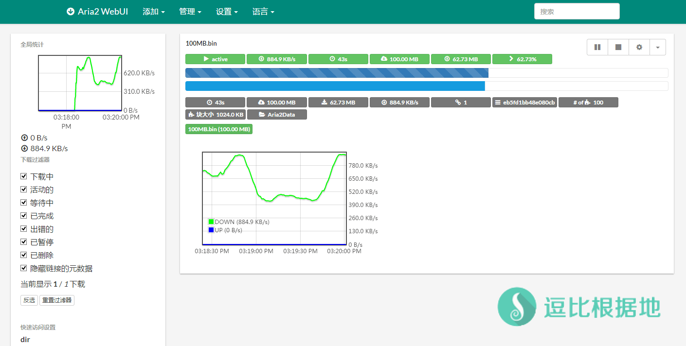
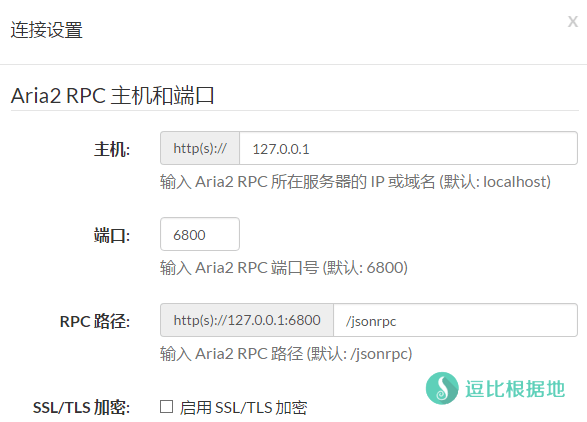

前段时间因为写了两个BT下载工具（Cloud Torrent、Peerflix Server）再加上我以前也写过 linux 版Aria2的教程，所以有人想让我写一个 windows 版Aria2的教程，那我就写一个吧。
Aria2 Linux版教程：一个支持 离线下载/BT/磁力链接 的在线管理工具 —— Aria2 WebUI
『重制』一个支持 离线下载/BT/磁力链接 的Aria2在线管理面板 —— AriaNg
BT/种子/磁力链接/HTTP/FTP 离线下载工具 —— Aria2 新手动安装教程
界面截图

安装步骤
下载懒人包
点击下载 Aria2 windows版懒人包。
解压后会得到一个 Aria2 的文件夹，里面有这几个文件。
aria2.conf # 配置文件 可以自己根据说明修改 aria2.exe # 启动文件 使用这个来启动 aria2 aria2.session # 任务保存文件 未完成任务会保存在这里 aria2c.exe # 32位命令行主程序 Aria2Data # 下载目录 默认下载文件会保存在这里
我们通过运行 aria2.exe 来启动 Aria2 服务端（32位/64位都是这个， aria2c.exe 不需要管）。
配置文件说明
配置文件是：aria2.conf
这三项是可以看情况调整的，其他的配置请看配置文件中的中文注释，不懂得不要乱动，避免出错。
# 文件的保存路径(可使用绝对路径或相对路径), 默认: 当前启动位置 dir=Aria2Data # 从会话文件中读取下载任务 input-file=aria2.session # 在Aria2退出时保存`错误/未完成`的下载任务到会话文件 save-session=aria2.session
下载这个 DHT文件 并把它放到 C:\Users\用户名(Administrator)\.aria2 文件夹中，没有就新建 .aria2 文件夹。BT下载速度就取决于这个问题，默认Aria2因为没有自带完整的DHT文件所以BT没速度或者非常慢，如果无法新建文件夹，就用 Aria2下载一个 BT文件，然后等一会，Aria2就会新建文件夹和一个初始的DHT文件，覆盖这个文件即可。
使用说明
在根据自己需要调整完 aria2.conf 文件后（非必需），我们通过运行 aria2.exe 来启动 Aria2 服务端（32位/64位都是这个，aria2c.exe 不需要管）。
启动后右下角托盘会出现托盘图标，然后我们打开网站：http://ziahamza.github.io/webui-aria2/
关于 Aria2 UI 说明
Aria2 实际上就是一个命令行的 HTTP/BT/磁力链接 的下载器，而这个网站则是 Aria2 UI，它是前端控制页面，来控制和给Aria2后端 下达 下载XXX的命令的，所以 前端放在哪里都行。上面我给的那个链接是 Aria2 UI 作者做的页面，我们只需要设置 主机IP 就能用了。
你也可以从 Github 或 逗比云 中下载前端的网页文件( html+css 静态的，所以不需要其他web环境)
解压后得到 webui-aria2-master 文件夹，进去后直接双击打开 index.html 文件，然后浏览器就会读取并打开这个页面了，这样你可以本地操作了，或者你可以在VPS上面安装 Nginx或Apache 来把网页文件放进去。
点击顶部菜单的 设置 — 链接设置，然后出现下面这个页面，然后主机填写 127.0.0.1 ，其他的都默认就行了。然后点击下面的 保存连接设置 按钮。
因为本身就有中文语音，所以教程也没什么好写的，链接 Aria2 服务端成功后，右上角会有提示。
这时候你就可以通过顶部菜单的 添加 — 使用链接(包括磁力链接) / 使用种子 / 使用 Metalink 下载 ，来添加下载任务了。

注意事项
声明：本文章仅提供 BT/磁力链接 下载工具的安装方法和说明，任何使用此工具 下载版权侵权文件或导致任何经济损失，皆和本人无任何关系！如果你不同意或有异议，请关闭这个网页！
这个前端面板并不会保存任何设置，所有设置都是 从后端的启动参数中获取的。
还有，我发现 Aria2 国内的DHT似乎不行，下载BT速度很慢，网上查了查，似乎下载前要挂一天，等DTH满了之后速度才会上来，因为我个人也不懂BT，所以懂的人在记得告诉我。
大部分IDC都是对版权文件敏感，特别是美国的VPS，当你下载BT和磁力链接文件的时候，很有可能会被封VPS。
所以请自行选择 版权文件不敏感的 瑞典 乌克兰 俄罗斯 罗马尼亚 地区的IDC的VPS。
Aria2 Linux版教程：一个支持 离线下载/BT/磁力链接 的在线管理工具 —— Aria2 WebUI
『重制』一个支持 离线下载/BT/磁力链接 的Aria2在线管理面板 —— AriaNg
其他的支持离线下载 BT和磁力链接的教程：https://doub.io/all-one/#BT、磁力链接下载 相关教程
懒人包原作者：http://aria2c.com/usage.html
转载请超链接注明：逗比根据地 » 多线程 HTTP/BT/磁力链接 下载工具 —— Aria2 (Windows版教程)
责任声明：本站一切资源仅用作交流学习，请勿用作商业或违法行为！如造成任何后果，本站概不负责！


aira2.exe创建一个快捷方式放到C:\ProgramData\Microsoft\Windows\Start Menu\Programs\Startup文件夹里，就会开机启动了。windows添加开机启动的教程网上很多，我相信不懒就能搜到。